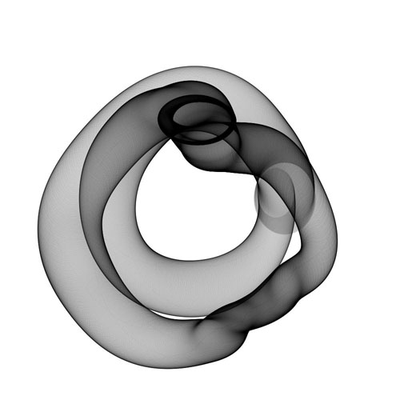

Animation & Generative Art
Generative Art
-Philip Galanter"Generative art refers to any art practice where the artist creates a process, such as a set of natural language rules, a computer program, a machine, or other procedural invention, which is then set into motion with some degree of autonomy contributing to or resulting in a completed work of art."
Programming vs. Art
Generative Art is neither programming, nor art with the traditional definition...
- Programming: the interface between man and machine. A logical exercise with clearly defined goals
- Art: emotional and subjective subject without a clear definition
- Generative Art: the point where the above meet. It takes strict, cold processes and uses them subversively in order to create illogical, unpredictable, expressive results
setup + draw
these functions are found at the heart of almost every program
void setup()
{
// code that we only want to run 1 time goes here
}
void draw()
{
// code that we want to be executed repeatedly goes here
}
- this is how our software becomes dynamic
- example: Space Invaders
- where code is place affects when and how often it's going to be executed
- 1 time: inside setup() - ideal for preparing our environment
- many times: inside draw()
setup + draw
scenario 1
void setup()
{
size(500, 500);
background(255);
}
void draw()
{
ellipse(mouseX, mouseY, 20, 20);
}
setup + draw
scenario 2
void setup()
{
size(500, 500);
}
void draw()
{
background(255);
ellipse(mouseX, mouseY, 20, 20);
}
simple pencil
//github location: example-code/simplePencil
void setup()
{
size(500, 500);
background(255);
}
void draw()
{
line(pmouseX, pmouseY, mouseX, mouseY);
}
some events
There are some events that are executed in certain conditions and the are called event functions:
mousePressed() - when a mouse button is pressedkeyPressed() - when a keyboard button is pressedmouseDragged() - when the mouse is pressed and draggedmouseMoved() - when the mouse is draggged
variables
- we can only run one command at a time so we need a place to store values until we need them again
- they provide abstraction
- I don't need to know the location of a value in memory. I just need to know its name
- variables are at the heart of dynamic programs
our own variables
initializing:
- definition: we give a name and type to a variable
float x; - we assign a value
x = 400; x = y * 2; x = abs(y);
using the variable
println(x);
strokeWeight(x);
strokeWeight(x/2);
types of variables
- for the machine to know how much memory to allocate
- types:
int = an integer like 1,2,3,4,5...etcfloat = a floating point number like 0.5, or 256.61char = a character like "a", "b", etc
- don't pick names that are Processing variables already
system variables
- Processing already comes with some variables
- we can't change their contents but we can read them
- we have already seen
mouseX ,mouseY ,pmouseX - there are more:
width ,height frameCount ,frameRate displayWidth ,displayHeight mousePressed ,keyPressed key
simple animation
// github location: /code-examples/simpleAnimation
int circleX = 25;
int circleY = 100;
void setup()
{
size(200, 200);
stroke(0);
fill(175);
}
void draw()
{
background(255);
ellipse(circleX, circleY, 50, 50);
circleX = circleX + 1;
}
- What does it do?
- If we wanted to move along the y-axis what would we change?